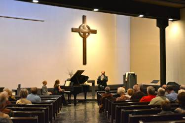
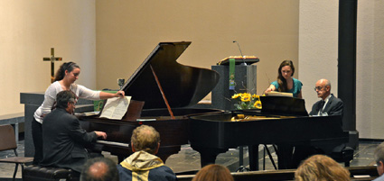

2013-2014 Fine Arts Series
Andrews University SingersStephen Zork, director
Sunday, November 3, 2013, 4:00 p.m. CST
The Music of Creation is the theme expressed throughout the choral concert to be presented by the Andrews University Singers under the direction of Stephen Zork. The choral program will be unwrapped with the rendering of the work “God, Your Voice Called Forth Creation” with music by John Horman and words by Mary Nelson Keithahn, commissioned to celebrate the 25th anniversary of the Fine Arts Board of The Presbyterian Church of La Porte, Indiana.
The Andrews University Singers will render stirring settings by some of the most beloved living composers from North America, South America and England. Included in the lighter fare will be the performance of several folk songs such as “Skylark” arranged by John Rutter, Stephen Foster's “Some Folks” arranged by Mark Hayes, the Brazilian samba “Aquarela do Brasil” arranged by University Singers' member Marcelo Martins, and the tender “Good Night, Dear Heart” arranged by Dan Forrest and set to the words of Mark Twain as inscribed on his daughter's tombstone. The centerpiece of the concert is the three-movement work “Gloria” by John Rutter.
During Mr. Zork’s 22-year tenure as Director of Choral Studies at Andrews University, the Andrews University Singers have contributed notable performances for local audiences and around the world. They have performed on the nationally televised ABC Christmas Special, given vetted concerts for their peers at three conventions for the American Choral Directors Association. Their international touring schedule has taken them on highly acclaimed concert tours to Great Britten, Iceland, Norway, Brazil, Zimbabwe, Chile, Bahamas, Bermuda and Puerto Rico. The University Singers have had the privilege performing in concert with musical artists such as Bobby McFerrin, King's Singers, and David Benoit. They have eight albums recorded in their discography, selections of which are featured on several syndicated radio broadcasts, including Sing For Joy.
Stephen Zork is the director of Choral Studies at Andrews University and the conductor of the Andrews University Singers – the recording and touring ensemble representing the university nationally and abroad. In addition to teaching courses related to choral pedagogy, he oversees the students of the graduate choral conducting degree in their responsibilities with the department of music choirs: I Cantori and University Chorale. Mr. Zork is one of three teachers on the conducting faculty and he keeps an active schedule guest-conducting choral festivals and lecturing throughout the United States and internationally.
 Carey Scheck & Friends
From Bach to Barber
Carey Scheck, piano
Frank Delo, Jr., clarinet
Michael Scheck, trumpet
Sunday, March 2, 2014, 4:00 p.m. CST
Program
4th English Suite in F major, BWV 809 – JS Bach
Piano Sonata No.47 in B minor - Hob.XVI: 32 – Franz Joseph Haydn
Ausencias and Street Tango – Astor Piazzola
Sonata for Trumpet and Piano (1956) – Halsey Stevens
Four Excursions – Samuel Barber
Carey Scheck is an independent piano teacher of a variety of ages and levels. After attending Valparaiso University to receive a degree in church music, Scheck attended Western Illinois University for a Masters Degree in Piano Performance. Her collegiate teachers included Dr. Joseph Bognar and Dr. Tammie Walker. As a student, Carey was fortunate to have experiences in accompanying, teaching lessons to individuals in an after school piano program, playing piano for the Wind Symphony and Orchestra, and teaching a piano class for undergraduate music majors. In addition to her responsibilities as a teacher, Scheck is an active performer in the NW Indiana area and a church musician at the Presbyterian and Episcopal churches in La Porte.
Frank Delo Jr. has been active as both a performer and teacher in suburban Chicago and abroad. He has performed with the Wheaton Municipal Band, Wheaton Symphony Orchestra, West Suburban Symphony Orchestra, DuPage Symphony Orchestra, Fox Valley Orchestra, DeKalb Municipal Band, the American Wind Band, the Quincy Symphony Orchestra, the Southeast Iowa Symphony Orchestra, the Lake Shore Symphony Orchestra, Sinfonietta Bel Canto, and the Charleston Symphony Orchestra. He has performed with the Lausitzer Opernsommer in Cottbus, Germany. Frank was selected as a participant in the Young Artist Program at the Scotia Festival of Music in Halifax, Nova Scotia, Canada. Frank also had the honor of receiving an Asian American Hall of Fame Award as Young Artist in Music, sponsored by Fil-Am TV Show.
Frank was a Clarinet Summit participant, where he had the opportunity to work under master pedagogue Kalmen Opperman and international soloist Richard Stoltzman. He has also played in masterclasses at the Southern Appalachian Clarinet Retreat with Dr. Denise Gainey and Dr. Diane Barger, and at the University of Oklahoma Clarinet Symposium with Steve Cohen.
Frank received a Master of Music in clarinet performance from Western Illinois University, where he studied with Professor Eric Ginsberg. He has performed with the University Orchestra and Wind Ensemble, and has been involved with various chamber ensembles there. Frank received a Performer's Certificate at Northern Illinois University under Dr. Gregory Barrett, where he performed with the NIU New Music Ensemble and NIU Middle Eastern Music Ensemble.
 Michael Scheck was born and raised in Kent, Ohio. He has received a Master of Music degree from Western Illinois University in Trumpet Performance and a Bachelor of Music degree from Bowling Green State University in Ohio, with majors in Music Education, Composition, and Trumpet Performance. His works have been performed at WIU, BGSU, The Eastman School of Music, Northwestern University, and The Cincinnati College Conservatory of Music, and his work Rush Hour Dance was selected to be performed at the 2007 International Trumpet Guild Conference. Michael has studied trumpet with Dr. Bruce Briney and George Novak, and composition with Marilyn Shrude, Paul Paccione, Burton Beerman, Elainie Lillios, Mikel Kuehn, and Andrea Reinkemeyer. Michael is a band director at South Central Schools in Union Mills and performs with the La Porte County Orchestra, the South Shore Orchestra, and the professional band, Windiana.
Michael Scheck was born and raised in Kent, Ohio. He has received a Master of Music degree from Western Illinois University in Trumpet Performance and a Bachelor of Music degree from Bowling Green State University in Ohio, with majors in Music Education, Composition, and Trumpet Performance. His works have been performed at WIU, BGSU, The Eastman School of Music, Northwestern University, and The Cincinnati College Conservatory of Music, and his work Rush Hour Dance was selected to be performed at the 2007 International Trumpet Guild Conference. Michael has studied trumpet with Dr. Bruce Briney and George Novak, and composition with Marilyn Shrude, Paul Paccione, Burton Beerman, Elainie Lillios, Mikel Kuehn, and Andrea Reinkemeyer. Michael is a band director at South Central Schools in Union Mills and performs with the La Porte County Orchestra, the South Shore Orchestra, and the professional band, Windiana.
Winners' Art Exhibition
May 18-May 30, 2014, 2:00 to 4:00 p.m. CDT daily
Opening reception: Sunday, May 18, 2014, 2:00 to 4:00 p.m. CDT
The Winners' Art Exhibition includes the works of the four winning artists from the 14th Biennial Juried Art Exhibition, April 28 - May 17, 2013.
Woodland Fantasy II & III
Linda Freel - South Bend, Indiana (First Place)
Linda Freel has been entering this show since the mid-1980s. She continues to be interested in drawing and painting nature subjects. She uses a variety of materials, such as oils, acrylics and various dry materials like colored pencils, pastels, conte crayons, charcoal and regular pencils. She exhibits regularly in various regional exhibits. She is currently teaching 2D Design and Graphic Design I part time at Indiana University South Bend.
Orchard Messiah
Randy Horst – Goshen, Indiana (Best In Show)
Randy Horst has an MFA in Drawing from Bowling Green State University in Ohio. He has taught art at Bowling Green State University and the University of Montana Western, and is currently teaching art at Goshen College. In addition to 2-D studio courses, Randy teaches Art History and has led trips to England, France, Italy, and Spain. Randy's drawings and digital images draw inspiration from the Biblical and Christian narratives. They explore our relationship to our spiritual and physical needs and desires. They also explore the conceptual flexibility of imagery. For instance a circle can be a hole to another surface, a polka-dotted pattern, and a puncture all at the same time.
Plants
Jimmy Duke Johnston – Michigan City, Indiana (Third Place)
"The art I practice is Drawing, Painting, and Printmaking; which are from life, not photographs. All the work is original, produced by my hands only. The concept is to create a work which will stand on its own – not paint a picture of something. My interest is in the form and color of objects and their relationships within the work, not reproducing a photographic likeness.
"The artists whose work I admire and who influence me are Matisse, Picasso, Braque, and Pollock. There are two statements, both I believe, by Kandinsky: I believe in 1) the first rule of painting is that there no rules, and 2) the subject of a painting is the painting."
Spirited Drawing I
Connie Kassal – Long Beach, Indiana (Second Place)
"My exhibit contains drawings and wall mounted sculptural objects/boxes. The drawings are on Arches Oil Paper. The paper allows me to draw with pencil and then smudge the image with oil bars. I try to capture the ghost of memories shimmering across heirlooms. The sculptural objects are boxes and reverse paintings on glass, allowing a certain view through the glass to the inside. Reflected light is meant to suggest an undefined energy. I work as a part time lecturer at Purdue University North Central and have been active in the visual arts locally for three decades."
Carillon Recitals – The Children's Carillon 10th Anniversary
Please bring your own lawn chairs, blankets or sit in the comfort of your car, rain or shine.
Sunday, June 8, 4:00 p.m. CDT
John Gouwens
John Gouwens has been Organist and Carillonneur of The Culver Academies (Culver Military Academy and Culver Girls Academy) since the fall of 1980. In 1989-90 and again from 1996 to 2004, he also served as Choir Director of The Academies. He also plays and teaches carillon at Indiana University (Bloomington) and Ball State University (Muncie).
Raised in Fort Wayne, he studied piano with Jack Ruhl and organ with Richard Carlson. Subsequently, he pursued college studies as an organ major at Indiana University, the University of Michigan, and the University of Kansas, with B.M. and M.M. degrees, respectively, from the latter two schools. His college organ instructors included Clyde Holloway, Robert Clark, and Robert Glasgow. He studied carillon extensively as well, notably with Albert Gerken at Kansas.
He was a finalist in the National Organ Competition at First Presbyterian Church in Fort Wayne in 1979, 1984, and 1989, and holds numerous other contest honors in organ and in carillon. In 1990, he won first prize in the International Organ Performance Competition held by the University of Michigan. His organ and carillon playing have been included in five programs of Pipedreams, broadcast nationally on American Public Media. Gouwens is also very active in the carillon field and as a composer. Last summer, he made his seventh European carillon recital tour. In 1992, he won an international competition for carillon composition in Belgium, and his winning piece (published by the Royal Carillon School of Mechelen, Belgium) was required for finalists in the Queen Fabiola Competition in 1993. He won another composition competition in 1993, writing a choral piece for the Bicentennial of the City of Fort Wayne, which was performed at the opening festivities of that city's celebration by the Fort Wayne Philharmonic Choir. John Gouwens has served in many leadership positions in the Fort Wayne and Saint Joseph Valley chapters of The American Guild of Organists. In addition, he has given several presentations on improvisation, hymn playing, and musical interpretation matters for various AGO chapters. He is also active as an organ recitalist, having given recitals at many notable venues around the country.
Mr. Gouwens is the author of the first American carillon teaching book written (and the only one currently available), Playing the Carillon: An Introductory Method, published by The Guild of Carillonneurs in North America.
Mr. Gouwens also served as consultant in the planning, design and adjustment of The Children's Carillon and also played the dedication recital on May 16, 2004.
Sunday, July 27, 4:00 p.m. CDT

Mark Lee
Mark Lee holds a Bachelor of Music degree in Music Education (Benedictine University) and a Master of Music degree in Piano Performance (American Conservatory) and is active as an independent music teacher, performer and adjudicator. He currently serves as Director of Music at St. Paul Lutheran Church in Skokie, IL and as Choir Director at Congregation Beth Shalom, Naperville, IL. Mr. Lee is certified as a carillonneur by the Guild of Carillonneurs of North America and performs regularly at the University of Chicago's Rockefeller Memorial Carillon and at Naperville's Millennium Carillon. He currently serves as co-editor of the Guild's newsletter Carillon News. Mr. Lee is also an examiner for the Royal Conservatory of Music Examinations, Toronto, Ontario.
Sunday, August 24, 4:00 p.m. CDT
Dennis Curry
 Dennis Curry is Carillonneur and Associate Music Director at Kirk in the Hills, in Bloomfield Hills, Michigan. His carillon studies began with Dr. Frederick Marriott, and he advanced to Carillonneur member of the Guild of Carillonneurs in North America (GCNA) in 1989. President of the GCNA for 6 years, Dennis has also served on the Board of Directors and as juror on the Guild's Student Examination Committee. He was a member of the Executive Committee of the World Carillon Federation (WCF), serving as its Treasurer and Vice-President. In 2001 with the support of the Kirk, he hosted the 59th Congress of the GCNA, which honored the centennials of Percival Price and Frederick Marriott. He supervised the formation of the Marriott Memorial Library and the complete renovation of the Kirk carillon – the world's largest (77 bells).
Dennis Curry is Carillonneur and Associate Music Director at Kirk in the Hills, in Bloomfield Hills, Michigan. His carillon studies began with Dr. Frederick Marriott, and he advanced to Carillonneur member of the Guild of Carillonneurs in North America (GCNA) in 1989. President of the GCNA for 6 years, Dennis has also served on the Board of Directors and as juror on the Guild's Student Examination Committee. He was a member of the Executive Committee of the World Carillon Federation (WCF), serving as its Treasurer and Vice-President. In 2001 with the support of the Kirk, he hosted the 59th Congress of the GCNA, which honored the centennials of Percival Price and Frederick Marriott. He supervised the formation of the Marriott Memorial Library and the complete renovation of the Kirk carillon – the world's largest (77 bells).
In 2011, he hosted the WCF World Congress, celebrating the 75th Anniversary of the GCNA – which was the largest gathering of carillonneurs in history.
A carillon recitalist in the USA, Europe and Asia, Dennis has also performed in several prestigious international carillon festivals – Springfield (2002), Historic Bok Tower & Sanctuary (2003), Løgumkloster (2007), and Centralia (2002/2009). His other musical endeavors have included Section Leader for the Detroit Symphony Chorale & Chorus, President of the Kenneth Jewell Chorale, and appearances as organist and vocalist at area churches and synagogues. He retired from Ford Motor Company after 38 years as Regional Manager for Environmental & Safety Engineering in Eastern/Central Europe, Central Asia, Middle East and Africa. He is now consulting as the global regulatory strategist for Navistar International.
Duo Pianists – on Two Steinway Grand Pianos
Andrew Remillard and Edgar Swarthout
Sunday, September 21, 2014, 4:00 p.m. CDT
Program
|
PetiteSuite
En Bateau
Cortège Menuet Ballet |
Claude-Achille Debussy
(1862-1918) |
|
Variations on a theme by Joseph Haydn
Theme
8 Variations Finale |
Johannes Brahms
(1833-1897) |
|
Concerto for Two Harpsichords (Pianos)
without accompaniment
Allegro
Adagio Fugue |
Johann Sebastian Bach
(1685-1750) |
|
Sonata for Two Pianos
Prologue
Allegro molto Andante lyrico Epilogue |
Francis Poulenc
(1899-1963) |

Andrew Remillard received his bachelor's degree in Piano Performance from Wheaton College and a master's degree in Piano Performance from the De Paul University. His teachers included William Phemister, Michael Fritsch, and Mary Sauer. He has played extensively throughout the Midwest in solo recitals and with orchestras. His students have completed courses in musical studies at major colleges and universities. He is owner of ANR Piano, a piano repair and rebuilding facility in Downers Grove, Illinois.
Edgar Swarthout holds bachelor's degrees in Piano Performance and Composition and a master's degree in Music Theory, all from the American Conservatory. Among his teachers were William Browning for piano, Stella Roberts for theory, and Leo Sowerby for composition. Although not a professional musician, he maintains his piano technique and continues to pursue his interest in the theoretical and critical aspects of music.
Duo Pianists
Andrew Remillard and Edgar Swarthout first met in 2003. On that occasion, Mr. Swarthout had engaged Mr. Remillard's piano shop to rebuild his piano. During conversations in the course of that work and subsequently, it came apparent that both men harbored a long dormant interest in playing two-piano music. By 2005 they had begun playing for their own enjoyment. Initially that was enough, however the idea of playing for audiences became a significant part of their interest, and a search for performance venues began. Their first recital took place in 2006. Since then, they have performed at various locations in Chicago's western suburbs, including the Downers Grove Music Club, the Timber Lake Theatre in Mount Carroll, Illinois, and on numerous occasions at the La Grange, Illinois Public Library. They continue to perform in the Chicago suburb area.
